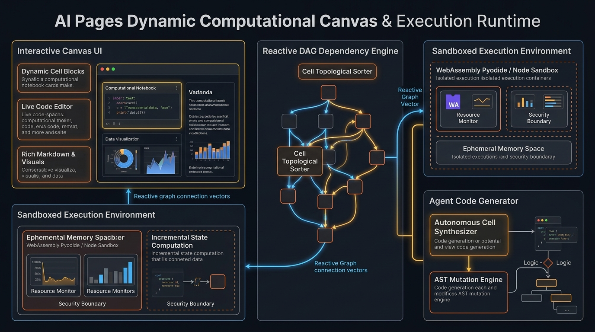

Dynamic Canvas Sandbox Engine
Configure reactive execution blocks, Wasm kernel runtimes, and multi-agent artifact bridges.
Live Canvas Graph & Execution Runtime
Execution Latency
14.2 ms
DAG Reactive Nodes
8 Active
Sandbox Security
ZDR Isolated
Click "Generate Canvas Specification" to compile the reactive execution graph...
High-Throughput Canvas Architecture

Overview & Production Capabilities
Pages Dynamic Canvas turns static AI responses into interactive, reactive micro-applications. Rather than reading Markdown code snippets, users and autonomous agents execute Python/Wasm computations, render live interactive graphs, and inspect live data frames directly on the page.
Enterprise Production Scenarios
- Autonomous Financial Risk Modeling: Analysts pose scenarios and the model dynamically spins up Monte Carlo simulation blocks, rendering interactive VaR curves.
- DevSecOps Infrastructure Automation: Live canvas cells execute dry-run Terraform plans and visualize drift topologies before human signoff.
- Biomedical Data Exploration: Scientists interact with protein structure viewers and statistical analysis blocks computed locally via WebAssembly.
Infrastructure & Software Technology Stack
Reactive Compute Engine
- Client Wasm: Pyodide 0.26+ (In-Browser CPython 3.12 WebAssembly)
- Analytical SQL: DuckDB Wasm with columnar Parquet acceleration
- Visual Canvas: Vega-Lite & Observable Plot reactive charting
- DAG Resolver: Topological sort reactive dependency graph engine
Sandboxing & MicroVMs
- Server Sandboxes: gVisor (runsc) user-space kernel microVMs
- Kernel Security: Seccomp-BPF filters & network namespace isolation
- Privacy Flag: Zero Data Retention (ZDR) validation on state commits
- Resource Quotas: Strict cgroups v2 memory (512MB) & CPU limits
APIs & Coordination
- API Framework: FastAPI (ASGI) with Arrow IPC memory streaming
- Agent Protocol: OpenAI Canvas Artifact Protocol & Model Context Protocol
- State Bus: Full-duplex WebSocket live cell state broadcasting
- UI Framework: Modern Vanilla JS / ES Modules with Shadow DOM